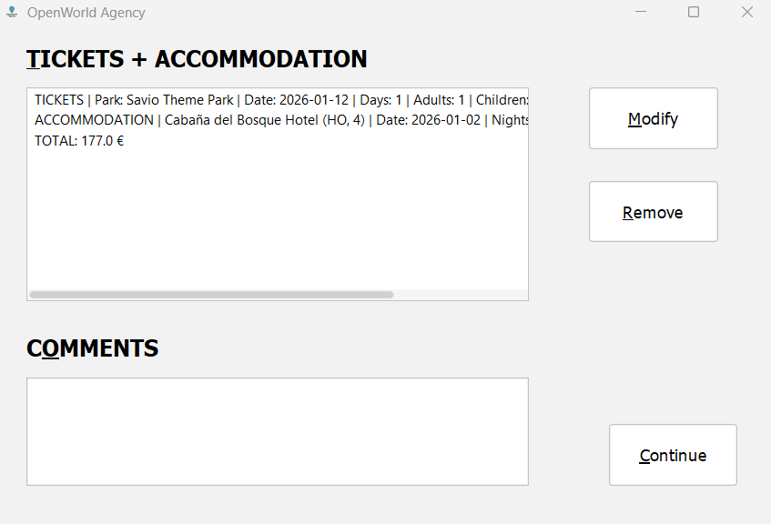
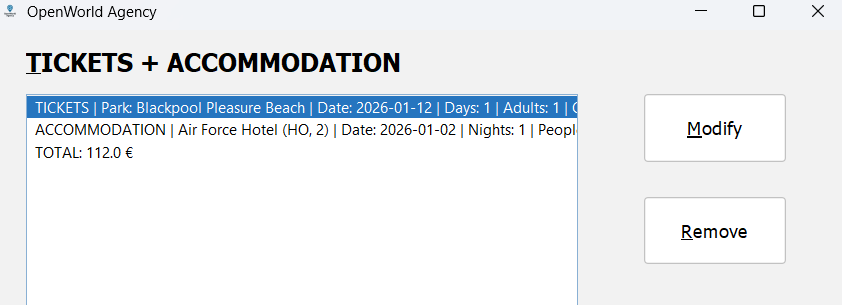
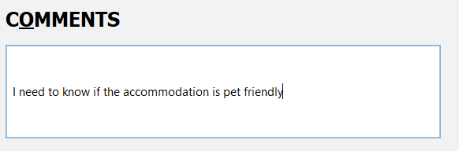

Reservation panel
The Reservation panel displays all the booking elements that the customer has selected so far, such as
park tickets and accommodations. From here, you can modify or remove individual items, add comments,
and continue to the customer information step.

Elements on the screen
- Reservation list: A list or text area that shows all current booking elements (tickets and/or
accommodations). Each line typically represents one part of the reservation.

- Modify button: Allows you to change the details of the selected line. For example:
- If you select a tickets line and click Modify, you are taken back to the Theme Parks panel
with the fields initialised for a new configuration.
- If you select an accommodation line and click Modify, you are taken back to the
Accommodations panel with the fields ready to be re-entered.
- Remove button: Removes the selected reservation line. You cannot remove all items; at least
one must remain to be able to continue.
- Comments area: A text area where you can add comments or special requests related to the
reservation (for example, room preferences, accessibility needs, etc.).
Continue button: Moves to the Customer Information panel to enter the client’s personal data.
- Back button (if present): Returns to the previous panel without finalising the reservation.
How to modify an existing reservation item
- Click on the line in the reservation list that you want to change.
- Press the Modify button.
- You will be redirected to the corresponding panel:
- Theme Parks panel for ticket bookings.
- Accommodations panel for accommodation bookings.
- Re-enter the desired values and confirm the booking again.
How to remove an item
- Select the line to remove in the reservation list.
- Click Remove.
- The line disappears from the list. If this would result in an empty reservation, the system may prevent it, since at least one element must be booked.
Adding comments
Use the comments area to record any special notes that should be stored together with the booking.
These comments will be included in the saved file as part of the proof of payment and booking
information.
Next step
When the reservation contents are correct, click Continue to move to the Customer Information
panel and enter the client’s personal details.
Related topics